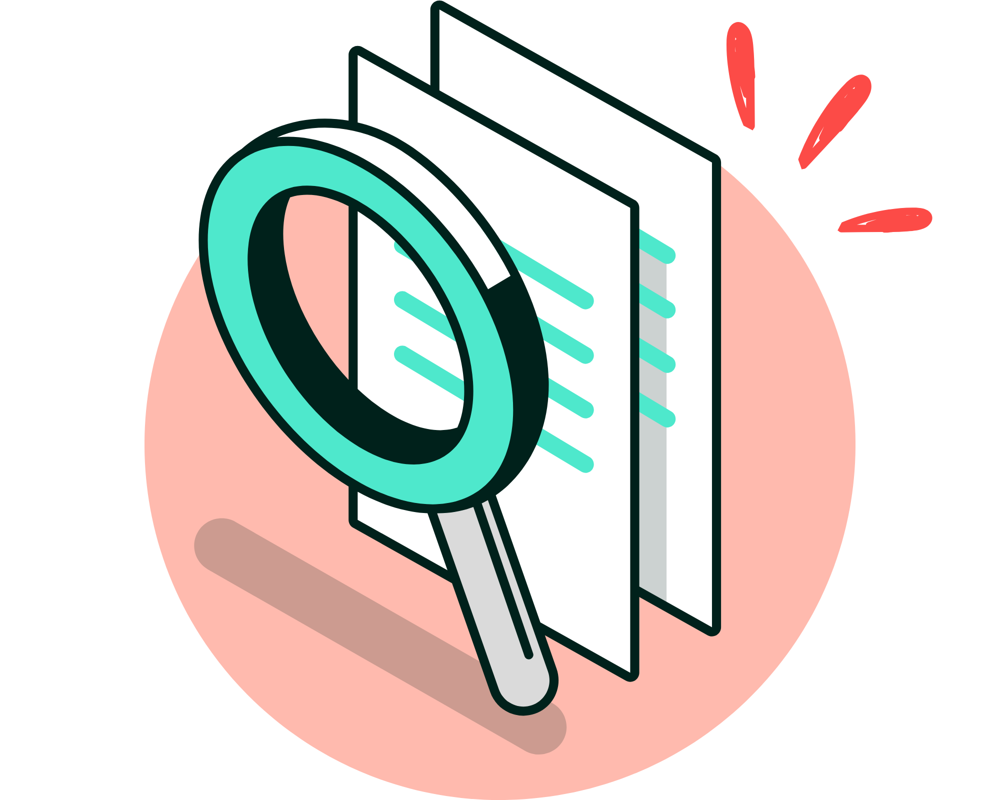

Den nya strukturen gör det lättare att se vilka regler som gäller, vilket hjälper arbetsgivare att skapa en säker arbetsmiljö.

Reglerna har förtydligats och språket har förenklats, så det blir klarare vem som ansvarar för vad.

Reglerna har digitaliserats, vilket gör det enklare att söka, läsa och använda dem på olika enheter, som mobiler och datorer.

Genom att ta bort onödiga och dubbla regler blir det enklare för arbetsgivare att hantera dem.